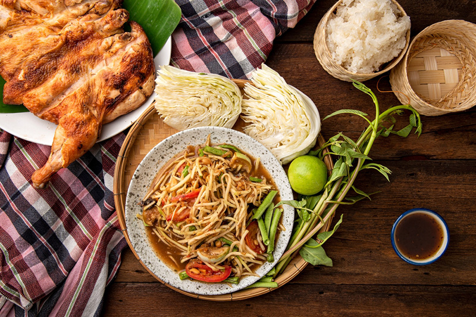
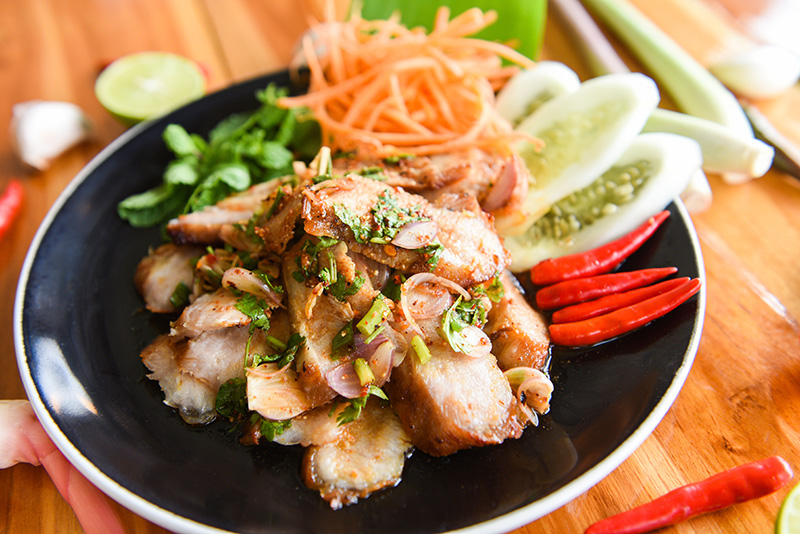
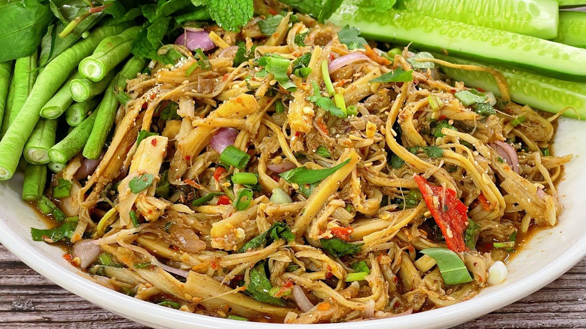

"อาหารภาคอีสาน"
"ส้มตำ"
"ส้มตำ" เมนูสุดฮิตที่ไม่ว่าจะกินตอนไหนก็แซ่บซี๊ดถึงใจ
เอกลักษณ์คือความกรอบของเส้นมะละกอ สับหยาบๆ คลุกเคล้ากับรสชาติ
เปรี้ยว เค็ม เผ็ด หวาน (แล้วแต่สูตร) ชูรสด้วยกลิ่นมะนาวสดและน้ำปลาร้านัวๆ

"ลาบ"
"ลาบ" คือเมนูที่แสดงถึงความประณีตในการเตรียมวัตถุดิบ (การสับ การคั่วเครื่องเทศ)
และเป็นเมนูแห่งการล้อมวงทานข้าว เพราะลาบจะอร่อยที่สุดเมื่อกินคู่กับ ข้าวเหนียวนุ่มๆ
ที่ปั้นเป็นก้อนแล้วจิ้มลงไปในน้ำลาบ ตามด้วยผักสดแช่เย็นกรอบๆ เป็นอาหารที่เชื่อมโยงผู้คนและสร้างความอบอุ่นในทุกมื้อจริงๆ

"น้ำตก"
คำว่าน้ำตกมาจากตอนที่เรานำเนื้อวัวหรือเนื้อหมูชิ้นโตๆ ไปย่างบนเตาถ่าน ไฟแรงๆ
จนผิวหมูด้านนอกสุกเกรียมเหลืองสวย แต่ข้างในยังนุ่มฉ่ำ สุกแบบ Medium Rare ตอนย่างน้ำหวานๆ
จากเนื้อ (Juice) จะค่อยๆ หยดลงบนเตาถ่านดัง ซู่ๆ เหมือนน้ำตก และตอนที่หั่นเนื้อออกมา
น้ำเนื้อสีชมพูระเรื่อก็จะไหลซึมออกมาบนเขียง นั่นล่ะครับคือที่มาของความนุ่มฉ่ำสะใจ

"ซุปหน่อไม้"
คำแรกที่ตักเข้าปาก: สัมผัสแรกคือความกรุบกรอบและเส้นที่นุ่มเนียนของหน่อไม้ฝอย
รสชาติเค็มนำนัวๆ จากปลาร้า ตามด้วยความเปรี้ยวสะใจจากมะนาวสด และเผ็ดร้อนจากพริกป่น
กลิ่นหอมของข้าวคั่วและงาป่นจะอบอวลขึ้นมาในจมูกทันที ผสานกับความฉุนซ่าสดชื่นของใบสะระแหน่
เป็นรสชาติที่นัวลึก เคี้ยวเพลิน จนหยุดไม่ได้เลย

"วัฒนธรรมการกินปลาร้า"
ถ้าพูดถึง "ปลาร้า" (หรือที่ชาวอีสานเรียกว่า ปลาแดก) มันไม่ใช่แค่เครื่องปรุงรสทั่วไป
แต่มันคือ "มรดกทางวัฒนธรรมและภูมิปัญญา" ชิ้นเอกที่ฝังลึกอยู่ในสายเลือดของคนไทย
โดยเฉพาะในแถบภูมิภาคอุษาคเนย์ (เอเชียตะวันออกเฉียงใต้) และลุ่มแม่น้ำโขงมานานนับพันปี
วิวัฒนาการของปลาร้าเดินทางมาไกลมาก จากอาหารประทังชีวิตในอดีต สู่ "Soft Power"
ระดับโลกในปัจจุบัน ลองมาเจาะลึกวัฒนธรรมการกินปลาร้าในแง่มุมต่างๆ กัน
.jpg)